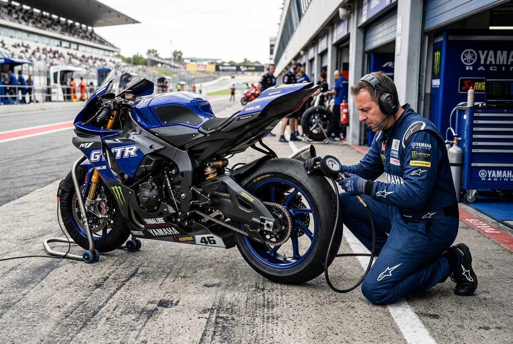

Track Day Prep Checklist: 12 Points Before You Ride
Every spring, the same scene repeats at scrutineering: a rider with a fast bike, fresh leathers — and coolant weeping from an over-tightened drain bolt. Track days don't fail on horsepower. They fail on details. This is the literal sheet our Race package techs sign before a machine leaves for circuit duty.
Filed Under
Series · Workshop Insights '26
Part of our running technical journal written by ApexMoto master technicians.

Jake Ramsey Contributing Editor
Keep Reading
Related From The Journal
Maintenance · 8 min
Torque Matters: What a Proper Tune-Up Really Changes
Before/after dyno curves from a full tune-up — throttle sync, valves, plugs.
Read Entry Fuel & Tuning · 9 minWhy Premium Fuel Isn't Always the Answer — Dyno Tests Compared
Three octane grades, ten pulls each, one patient Z900.
Read Entry Gear & Safety · 5 minHelmet Safety Standards Explained: DOT, ECE 22.06, SNELL
What each certification actually tests — and how we fit helmets in-store.
Read Entry